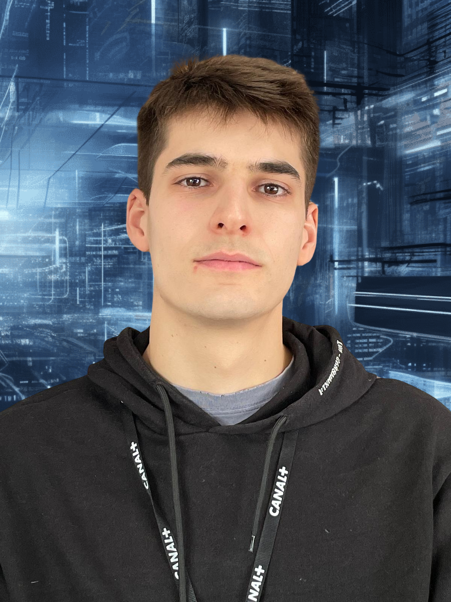
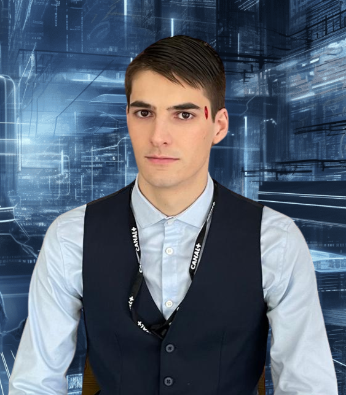
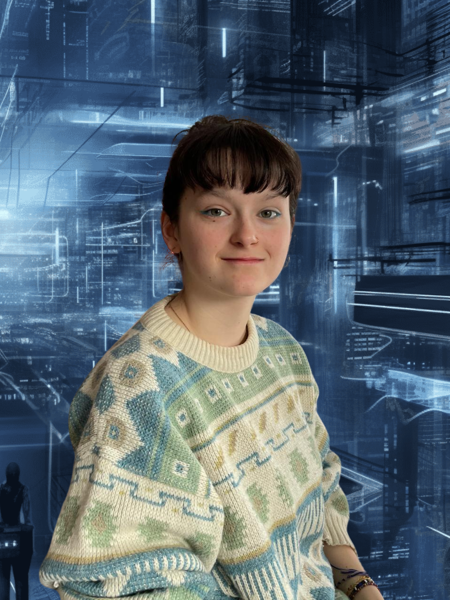
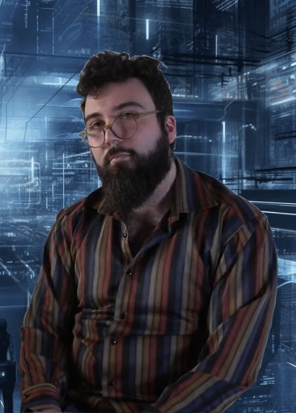
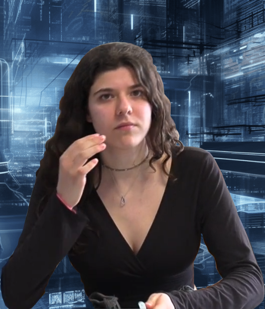
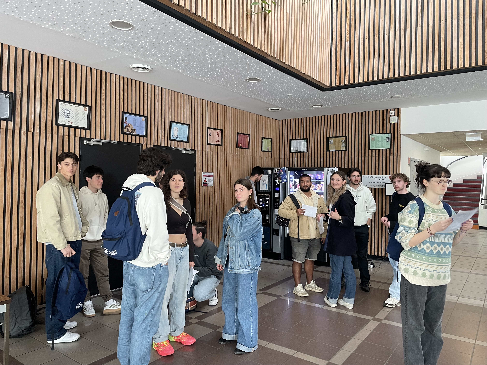

Dans un futur proche où les robots personnalisés remplacent les élèves à l'école, Mahé, un étudiant brillant mais paresseux, se repose entièrement sur son robot assistant pour suivre les cours et prendre des notes à sa place. Son robot, appelé M4H3, est une IA avancée conçue pour apprendre les habitudes et le comportement de son utilisateur, un véritable double numérique. M4H3 est fiable, précis, et représente la part de discipline que Mahé n'a pas. Son meilleur ami, Robert, est tout l'inverse : discipliné, assidu, mais doté d’un certain scepticisme face à cette dépendance technologique. Un jour, après un cours de Mme Semal, la mystérieuse professeure de cognitique, Mahé est alerté par une alarme provenant de son ordinateur. En tentant de se connecter à M4H3, il découvre avec horreur que son robot est en train de se faire attaquer par un mystérieux agresseur cagoulé, qui finit par lui voler sa mémoire, un élément essentiel pour la réussite de ses examens imminents. Mahé et Robert décident alors de mener leur propre enquête pour retrouver la mémoire volée. Ils remontent des indices dans les ruelles sombres et les sous-sols de l’école, jusqu’à tomber sur Gustave, un étudiant rebelle qu'ils soupçonnent être le coupable. Gustave semble vouloir saboter les robots des autres élèves pour réussir à être le meilleur lors du prochain contrôle. Une confrontation s’ensuit, où Mahé et Robert le coincent au-dessus du vide dans une scène de tension extrême. Mais Gustave, affolé, clame son innocence. Robert tente de raisonner son ami mais celui-ci veut désespérément retrouver M4H3 et ne l’écoute pas. C’est alors que Mme Semal apparaît, révélant qu’elle est derrière le sabotage des robots. Elle se moque de Mahé, lui expliquant que ces IA sont une menace pour la créativité et la pensée humaine. Elle croit que les étudiants doivent apprendre par eux-mêmes et que la dépendance aux robots les empêche de développer leur potentiel. Cette révélation plonge Mahé dans une prise de conscience. Finalement, Mahé retourne en classe, sans son robot. Il échoue à son devoir, réalisant que la facilité qu’il avait choisie en envoyant son robot à sa place lui a coûté cher. Il a ainsi appris l'importance de l'effort personnel. Il se réconcilie avec Robert et se promet à lui-même de ne plus céder à la paresse et de ne plus se reposer uniquement sur la technologie.

Mahé est le personnage principal du film. Étudiant désengagé et dépendant de son humanoïde M4H3 pour les tâches du quotidien, il va peu à peu être confronté à ses propres responsabilités et à la nécessité de reprendre le contrôle de sa vie.

M4H3 est l’humanoïde de Mahé, un robot domestique intelligent programmé pour assister son maître. Victime d’une mystérieuse agression, il devient le déclencheur d’une enquête menée par Mahé et son ami Robert.

Robert est un camarade de classe discret mais loyal. Bien que souvent perdu dans ses pensées, il est l’allié indispensable de Mahé dans son enquête, et l’aide à garder les pieds sur terre.

M. Latrille est le professeur de cognitique, à la fois grincheux, sarcastique… et machiavélique. Il cache une double facette et se révèle être à l’origine du sabotage de M4H3, pour pousser ses élèves à se responsabiliser face à l’usage des technologies.

Gisèle est une élève humaine vive, sarcastique et critique envers les humanoïdes. Soupçonnée à tort d’être responsable de l’agression de M4H3, elle cache en réalité… un tout autre secret.
